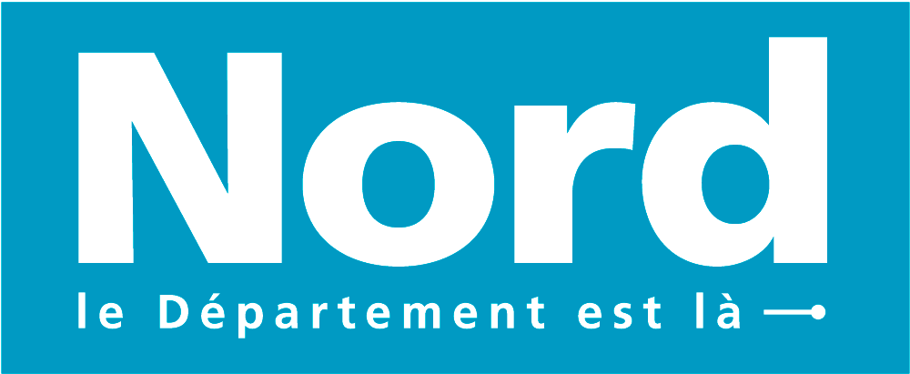

Le NORD est là
Par la diversité des activités, la richesse de ses patrimoines culturel et naturel et son identité unique, LE NORD est là pour les vacances de tous.
Parfois contraints de revoir vos projets en raison de la crise sanitaire, vous pouvez saisir l’opportunité de mieux découvrir un territoire incomparable.


Suivez le Nord
Le plein d'idées pour cet été
Le flux d’actualités départementales

Une signature, des engagements

Le Logotype du département du Nord a évolué. La couleur et la signature ont notamment changé.
Pourquoi ces changements?
La signature a évolué pour incarner la vocation du Département du Nord et traduire son ambition. En apparence, un petit changement lexical mais un grand changement de sens.
Le Département ne se contente pas de signifier son existence, il affirme ses engagements.
- Un engagement qui s’appuie sur les talents de nos agents : des agents LÀ, pour le Département.
- Un engagement pour plus de proximité avec les habitants : une vocation du Département plus que jamais nécessaire. Être LÀ, concrètement, au quotidien.
- Un engagement en faveur de services publics innovants et plus accessibles : le Département déploie de nouvelles politiques ambitieuses qui changent le quotidien de nos usagers. Une communication efficace doit le rendre visible au regard de tous. Avec près d’une trentaine d’agents certifiés OPQUAST (qualité web) au sein de la Direction communication, le Nord est aujourd’hui l’une des collectivités les plus engagées pour l’accessibilité de ses réalisations.
- Un engagement sans cesse renouvelé : le Nord se réinvente en permanence pour répondre aux attentes du territoire et pour anticiper les enjeux d’une société en constante évolution.
Le Nord se réinvente en permanence pour répondre aux attentes du territoire.
Elle est déclinées pour exprimer:
- Les engagements du territoire, le Nord est là.
- Les engagements de l'institution départementale: Le département est là
- Les engagements des agents du Département: Là pour le département

Le logotype passe du gris à un bleu lumineux. Cette évolution est le parfait symbole d’un Département qui a retrouvé des moyens d’action, et qui affiche fièrement le résultat des efforts consentis. Ce bleu renforce la visibilité de l’institution et facilitera son appropriation par les habitants.
A cette couleur, une gamme chromatique a été associée

Cette palette de bleus nuancés renvoie également à l’image des cieux changeants et des reflets de la mer du Nord.

Cette palette de bleus nuancés renvoie également à l’image des cieux changeants et des reflets de la mer du Nord.
Ces changements favorisent la visibilité des supports de communication de l’institution et du territoire. Dans un environnement caractérisé par l’abondance de signes et de messages, c’est essentiel.
Plutôt qu’un changement radical, la nouvelle marque propose une évolution graphique qui permet de capitaliser sur certains codes.
Cette évolution n’aura donc pas d’impact sur les supports de communication existants qui seront conservés et remplacés uniquement au gré des besoins.
Un changement responsable donc !
Exemples de support
Derrière cette signature, c’est l’offre d’information qui s’enrichit et se modernise pour être au plus proche des attentes et des usagers de nos lecteurs et internautes.
Le magazine du Département du Nord

Le flux d’actualités départementales
Le site internet du Département
La chaîne vidéo du Département du Nord

Exemples de supports de communication


Dispositif évènementiel

Outils à télécharger
Afin d’assurer le respect et la cohérence de son identité visuelle de marque, le Département du Nord a élaboré deux guides de référence.
Guide identité visuelle et repères graphiques
Il est destiné à celles et ceux qui souhaitent comprendre dans le détail les codes visuels du Département du Nord.
Téléchargez le guide d'identité visuelle et repères graphiques (PDF 1,1 Mo)Guide graphique pour les sites web publics
Il est relatif aux sites web du Département et plus particulièrement à ceux délivrant un service en ligne aux Nordistes. Destiné aux acteurs (internes comme externes) en charge de la réalisation de ces sites, ce guide définit les règles graphiques à respecter afin de garantir leur cohérence visuelle.
Le contenu de ce “Guide graphique pour sites web publics” est conforme aux règles nationales relatives à l’accessibilité (RGAA 4) et s’inscrit dans la démarche de qualité web Opquast.
Téléchargez le guide graphique pour les sites web publics (PDF 4,7 Mo){kind=link}